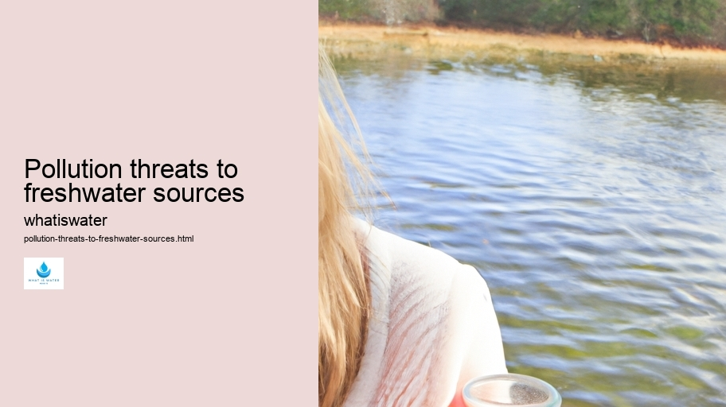

Hydrological Cycle
Hydrological Cycle
Evaporation and transpiration
Condensation and cloud formation
Precipitation and rain patterns
Surface runoff and river systems
Groundwater flow and aquifers
Snowmelt and glacial processes
Water storage in oceans lakes and reservoirs
Soil moisture and infiltration
Water balance and budgeting
Human impact on the hydrological cycle
Marine Ecosystems
Marine Ecosystems
Coral reefs and their biodiversity
Mangrove forests as coastal protectors
Ocean currents and climate regulation
Deepsea habitats and extremophiles
Intertidal zones and estuarine ecosystems
Marine food webs and trophic levels
Freshwater Ecosystems
Freshwater Ecosystems
Conservation efforts for marine species
Marine biogeochemical cycles
Impact of global warming on oceans
Water Resource Management
Water Resource Management
Rivers streams and creeks ecosystems
Lakes ponds wetlands habitats
Biodiversity in freshwater environments
Aquatic plants role in oxygenation
Freshwater fish species diversity
Invasive species impact on freshwater systems
Pollution threats to freshwater sources
Conservation strategies for freshwater biomes
Role of wetlands in flood control
Importance of riparian buffers
Cultural Significance of Water
Cultural Significance of Water
Sustainable water use practices
Desalination technologies for fresh water supply
Wastewater treatment processes
Rainwater harvesting techniques
Management of water during drought conditions
Transboundary water resource politics
Infrastructure for water distribution
Agricultural irrigation efficiency
Urban water demand management
Impact of climate change on water resources
About Us
Contact Us

Pollution threats to freshwater sources
Water Footprint
Pollution of freshwater sources presents a multifaceted dilemma that jeopardizes ecosystems, human health, and economic stability.
Pollution threats to freshwater sources - Water Conservation
Droughts
Water Pollution
Rivers and Lakes
Wetlands
Water Efficiency
Rainwater Harvesting
The origins of this pollution are diverse, stemming from industrial activities, agricultural practices, urban development, and inadequate waste management.
Industrial discharges contribute significantly to the degradation of water quality.
Conservation strategies for freshwater biomes
.
Water Pollution
Factories often expel chemicals such as heavy metals and toxic compounds directly into rivers and lakes. When these substances accumulate beyond natural remediation capacities, they can poison aquatic life and contaminate drinking water supplies.
Agriculture also poses substantial threats to freshwater through the use of pesticides and fertilizers. Runoff from farmlands carries nitrogen-rich compounds into waterways, leading to eutrophication.
Water Conservation
This process results in algal blooms which consume oxygen in the water and cause dead zones where aquatic organisms cannot survive.
Urban areas bring their own set of challenges with stormwater runoff being a primary concern. During rainfall events, paved surfaces prevent natural absorption of water into the ground. Instead, stormwater picks up pollutants like oil, grease, and litter as it flows untreated into nearby bodies of water.
Inadequate waste management exacerbates freshwater pollution problems.
Pollution threats to freshwater sources - Water Conservation
Drinking Water
Droughts
Water Pollution
Open dumps and poorly managed landfills allow leachate—a liquid that has percolated through solid waste—to escape into the environment. If not properly contained or treated, this leachate can pollute groundwater aquifers that serve as vital sources for potable water.
To address these issues effectively requires comprehensive strategies spanning policy reform, technological innovation, public education, and international cooperation.
Pollution threats to freshwater sources - Rivers and Lakes
Wetlands
Water Efficiency
Rainwater Harvesting
Droughts
Regulations must be enforced to limit pollutant discharge from industry while promoting cleaner production methods. Sustainable farming techniques should be incentivized to reduce chemical runoff.
Water Footprint
Technological advancements play a crucial role in detecting and removing contaminants from water sources.
Pollution threats to freshwater sources - Aquatic Ecosystems
Water Treatment
Drinking Water
Droughts
Investment in wastewater treatment infrastructure is essential for both urban centers and rural communities to ensure effluents are adequately treated before release back into nature.
Public awareness campaigns can encourage responsible behavior regarding drug disposal or limiting household chemical use that may contribute to pollution indirectly when entering sewage systems.
Finally, transboundary collaboration is necessary because freshwater systems do not adhere to political boundaries; thus shared resources require joint protection efforts between neighboring nations for effective conservation measures against pollution threats.
In conclusion, safeguarding our precious freshwater resources requires an integrated approach addressing all facets of potential contamination—from controlling industrial emissions to enhancing green urban spaces that absorb rainwater naturally—thereby ensuring clean water for future generations while preserving biodiversity within our treasured aquatic environments.
Hydrological Cycle
Check our other pages :
Marine food webs and trophic levels
Precipitation and rain patterns
Impact of climate change on water resources
Biodiversity in freshwater environments
Frequently Asked Questions
What are the primary sources of pollution that threaten freshwater ecosystems?
The primary sources of pollution threatening freshwater ecosystems include industrial discharge, agricultural runoff (including pesticides, fertilizers, and animal waste), and untreated sewage. These pollutants can lead to eutrophication, contamination with harmful chemicals, and the spread of waterborne diseases.
How does plastic pollution specifically affect freshwater environments?
Plastic pollution affects freshwater environments by creating physical hazards for aquatic life through ingestion or entanglement. It also breaks down into microplastics that can absorb toxins and be consumed by wildlife, entering the food chain. Moreover, it disrupts habitats and can transport invasive species attached to floating debris.
What measures can individuals and communities take to reduce pollution in freshwater sources?
Individuals can reduce pollution in freshwater sources by properly disposing of waste, reducing the use of plastics, avoiding pouring hazardous substances down drains, using environmentally-friendly household products, and supporting sustainable agriculture practices. Communities can implement effective wastewater treatment facilities, enforce regulations against industrial discharge into water bodies, promote conservation initiatives, engage in clean-up efforts, and educate the public about responsible water stewardship.